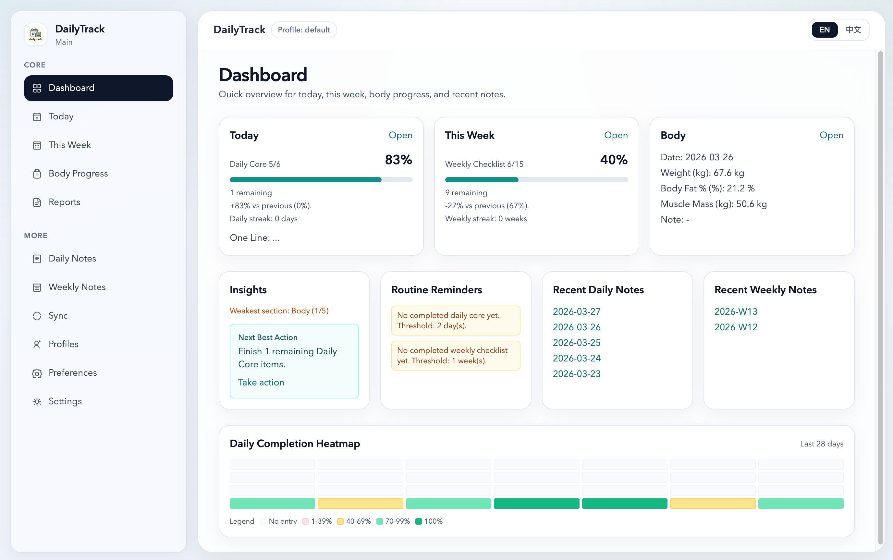

File ownership first
No hidden app database. Your real data is visible on disk.
OPEN SOURCE · LOCAL-FIRST · FILE-OWNED
dailytrack keeps your data in local Markdown/CSV, adds structured editing and autosave, and now provides safer recovery guardrails for long-term personal use.
Daily OS Preview

Built to feel modern, while keeping your files transparent and durable.
No hidden app database. Your real data is visible on disk.
Checklist-first interactions with debounced autosave by default.
Profile delete is reversible via trash + in-session undo.
WebDAV snapshot + realtime sync with conflict tools.
Move data roots, export zip bundles, and keep control.
English and Chinese interfaces with consistent data schema.
Everything you need to start, sync, and recover — directly on this page.
Install from latest release and finish onboarding.
Open Daily Note, Weekly Note, and Body once each.
Check autosave by reopening the same note page.
Confirm your data root path in Settings.
Morning: review Daily Core checklist.
During day: update checklist and one-line notes.
Week-end: fill Weekly reflections and next-week priorities.
Use history pages for calendar/week-grid review.
Add one record with date + key metrics.
Configure visible metrics and units in Preferences.
Use trend ranges (7d/30d/90d/all) for weekly review.
Attach context in note field for better interpretation.
Set URL/credentials and run Test Connection first.
Do one manual Push Now to establish baseline snapshot.
Use Sync page for Push/Pull/Both operations.
Resolve conflicts with preview before batch apply.
Profile deletes go to `.trash` instead of hard deletion.
Use in-session Undo immediately after mistaken delete.
Review destructive sync actions in confirmation dialog.
Keep periodic zip exports as offline backup.
Focused Interface Preview
Dashboard
Start with local files, add structure where it helps, and keep long-term trust in your data.